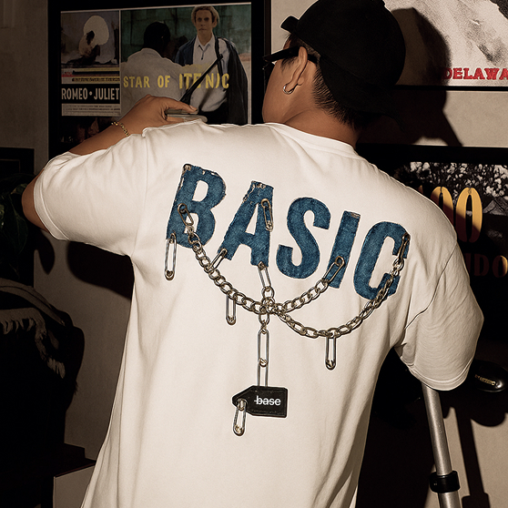
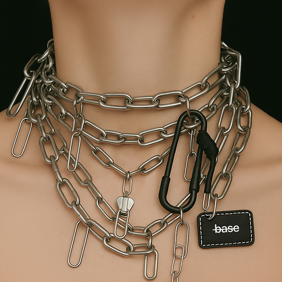
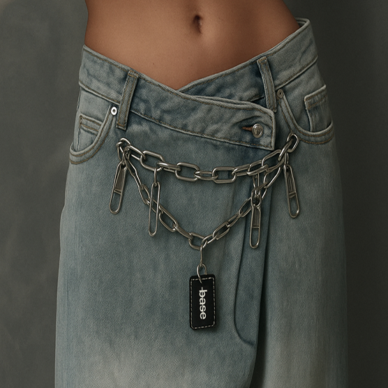
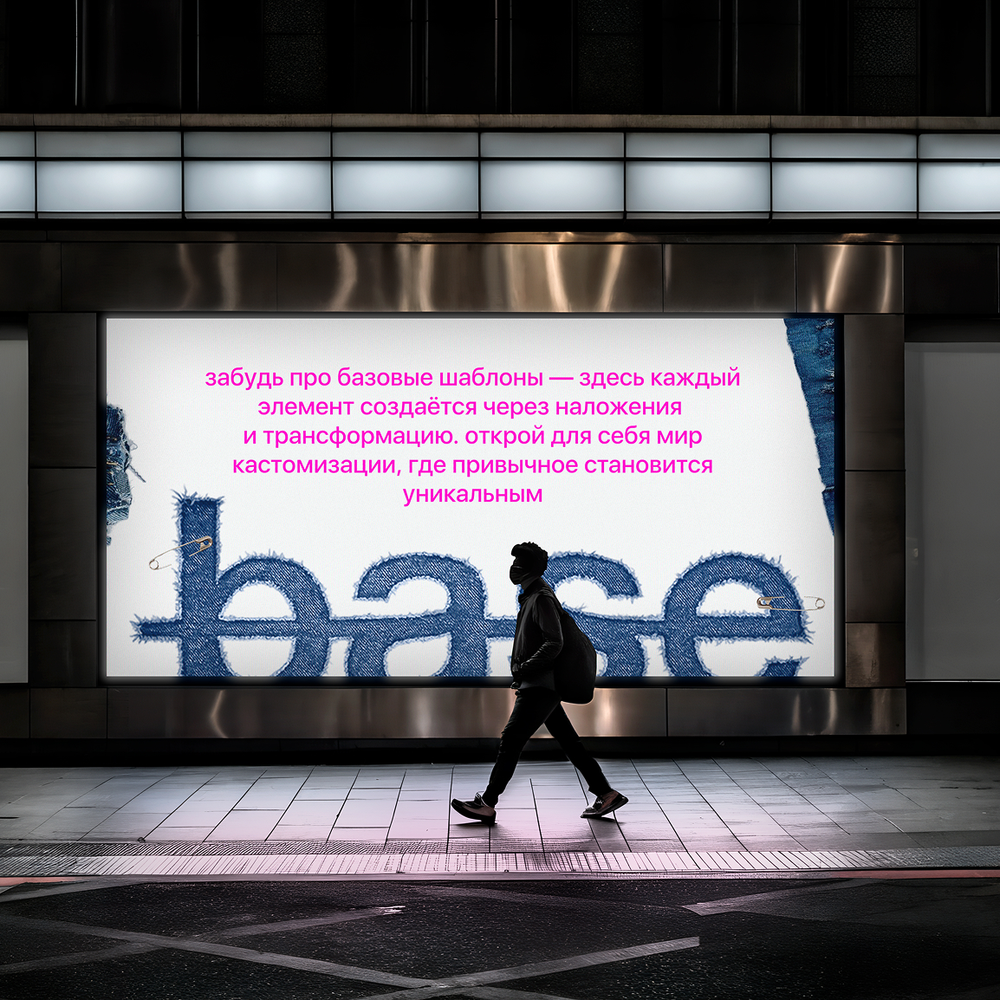

О ПРОЕКТЕ




в последние годы кастомизация становится массовым трендом: люди стремятся к уникальности, устойчивости и персонализации вещей - от одежды и обуви до мебели и аксессуаров. однако рынок кастомизации остаётся фрагментированным: знания, мастера и материалы рассредоточены по разным платформам и сообществам, что затрудняет доступ к качественной информации и услугам
наша платформа объединяет качественные структурированные курсы, актуальную информацию о трендах и примерах работ, а также единое удобное пространство для поиска и изучения всех материалов
НАША МИССИЯ
в мире, который пытается убедить нас, что стиль можно купить в готовой упаковке, мы верим в обратное. настоящий стиль не покупают. его создают
наша миссия — помочь каждому человеку обрести свой уникальный голос в мире моды, преодолев страх чистого листа и превратив обычные вещи в личные артефакты, полные смысла.
ПОЧЕМУ МЫ ЭТО ДЕЛАЕМ?
мы видим, как теряется индивидуальность в океане серийных коллекций. мы замечаем разочарование в глазах, когда у пяти человек на одной улице — одна и та же куртка. мы знаем, как много в ваших шкафах вещей с историей, которые просто ждут второго акта
наша задача — дать вам не просто инструменты, а уверенность в том, что ваша уникальность заслуживает того, чтобы ее носить
слишком длинная нить: Нить длиннее 50 см будет путаться и обтрепываться
сильное натяжение: Не затягивайте стежки слишком сильно, это стянет ткань и создаст «пузырь»
пропуск пялец: Вышивка без пялец почти всегда приводит к неровным, стянутым стежкам
ФИЛОСОФИЯ БРЕНДА
мы глубоко убеждены, что самые ценные предметы гардероба — это те, что хранят тепло рук и частичку истории своего владельца. мы превращаем одежду в личные реликвии, где каждый шов, каждая вышивка, каждый рисунок — это новая глава вашей автобиографии. представьте: ваша обычная футболка постепенно становится артефактом, который без слов рассказывает миру: «я был здесь, я чувствовал это, я — это я»
для нас успех — это когда вы надеваете кастомизированную вещь и ловите на себе восхищенные взгляды. когда на вопрос «где ты это взял?» вы с гордостью отвечаете: «это моя работа». когда ваш гардероб превращается в музей ваших собственных творческих достижений, а процесс создания приносит не меньше радости, чем конечный результат
мы учим не просто техническим приемам кастомизации. мы учим смелости быть собой. наша платформа — это безопасное пространство для экспериментов, где нет «правильных» и «неправильных» результатов, а есть только ваш уникальный творческий путь, где каждая работа ценна именно своей аутентичностью